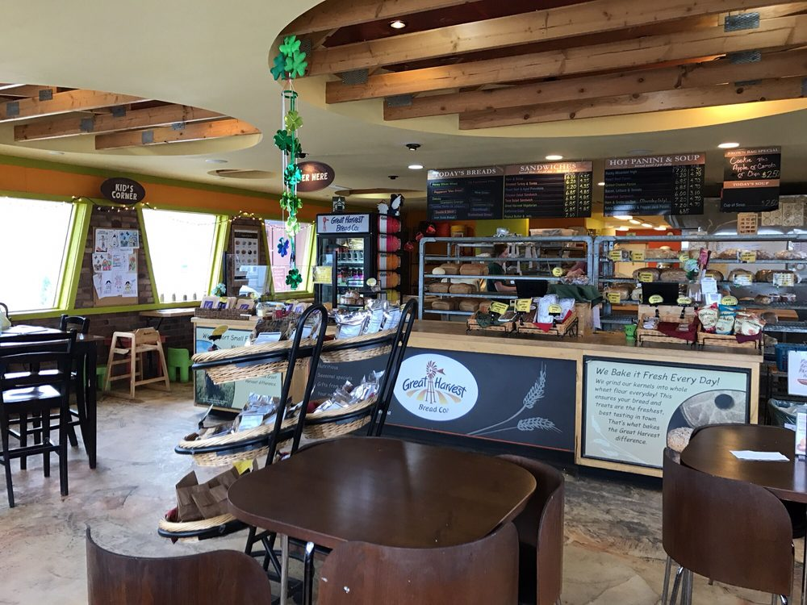
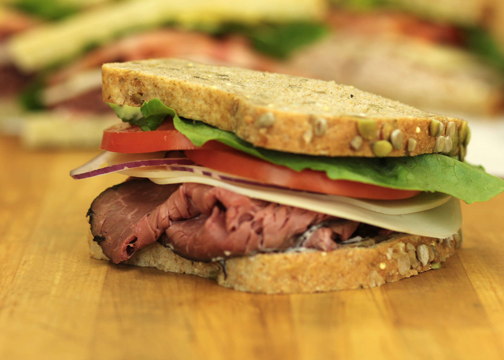
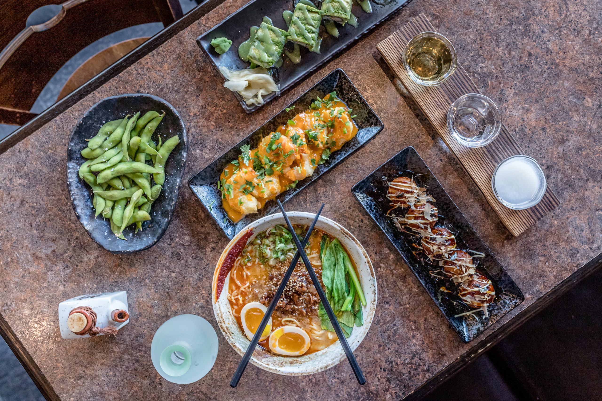
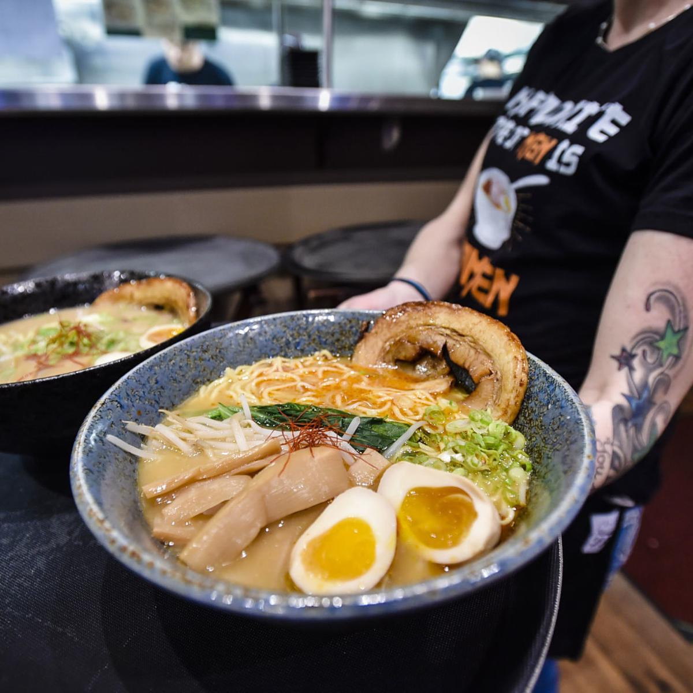
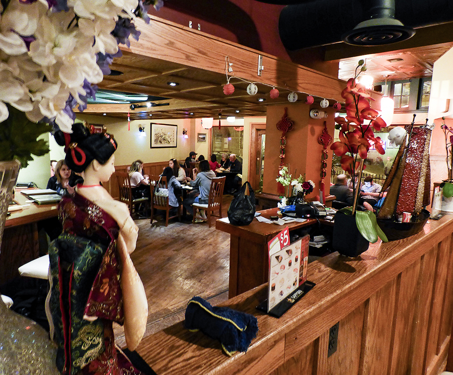
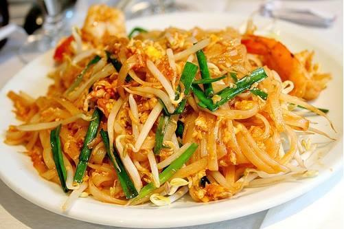

Best Food in Helena
Great Harvest Bread Co.
 Great Harvest is a Montana Staple. They are a big player in the wheat industry that is so core to the Montana Community. Much of the wheat used in their bread comes from just a few miles down in Three Forks. The food is decent, but really this place shines because of its Montana roots. Their lunch sandwhiches are the main attraction, but they also have good breakfast options.
Hokkaido Ramen
 While this is a chain, the food doesn't feel like it. If you are trying to get your spice on, this is the place. They have a wide variety of options, appetizers, and deserts with an asain flair. My go to order is the Gyoza Dumplings, veggie sushi, and spicy ramen. They are my go to carry out option in Helena.
Suki Cafe
 This is a bold claim, but this place is tied as my favorite place to eat in Helena. I go their so often that when I arrive, they know my name and my order. I sit down and my food is ready. And let me say... wow. The other day I ordered spring rolls, gyoza, and two orders of cucumber rolls. The best part? It was only $26. I would pay twice that for the quality they give. 10/10 would reccomend.